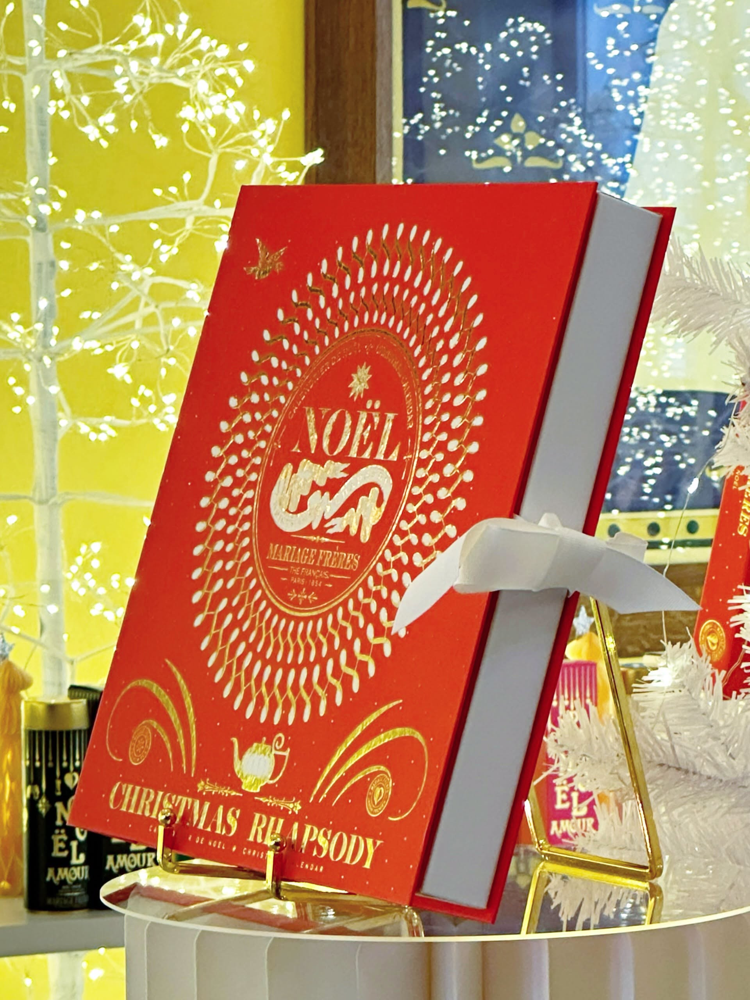
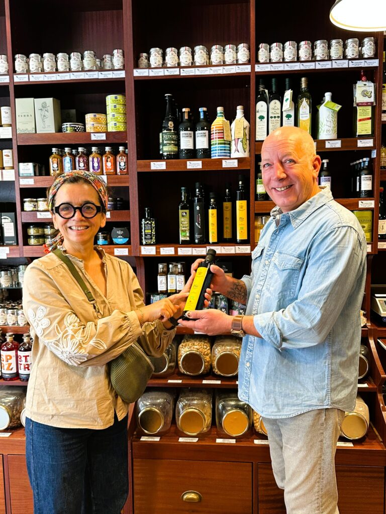
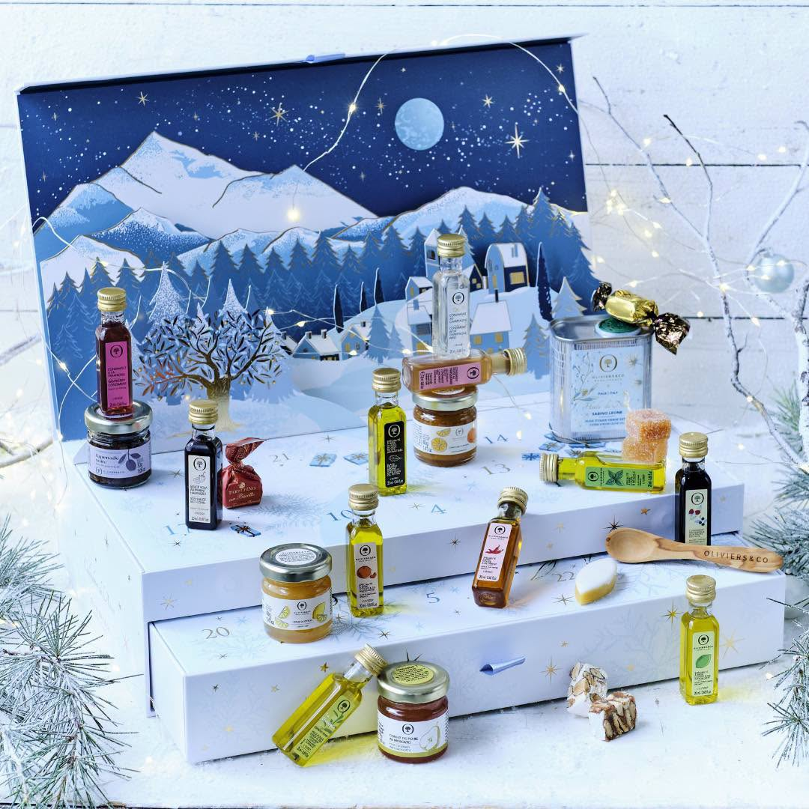
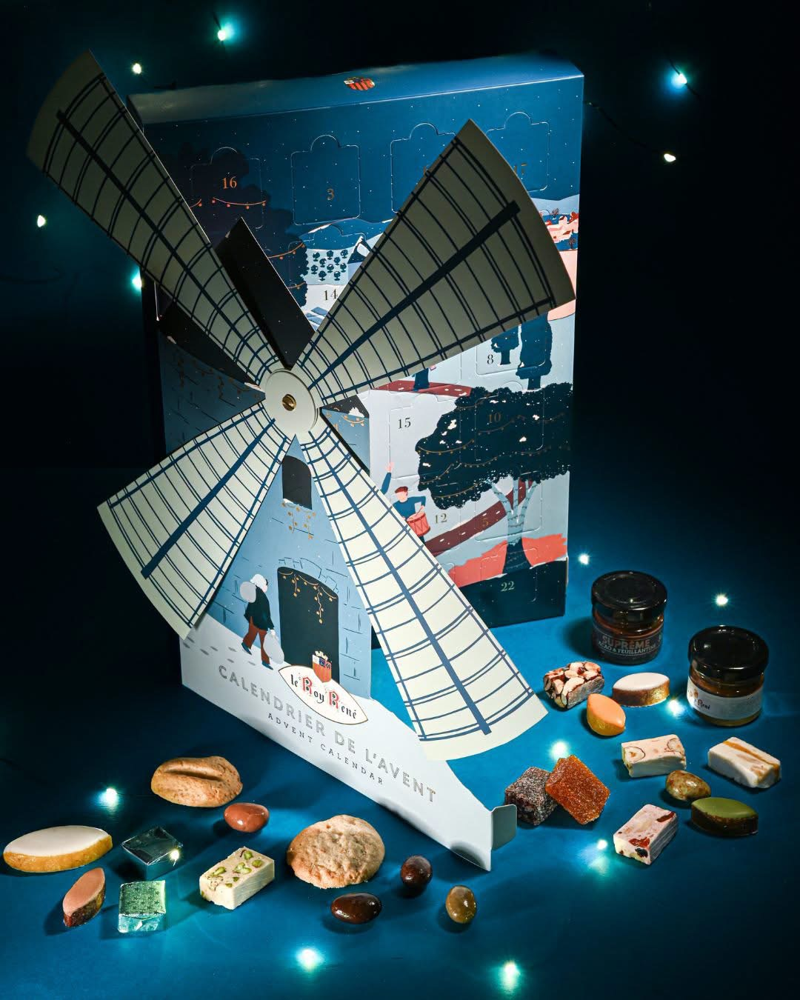
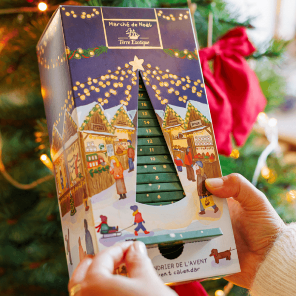
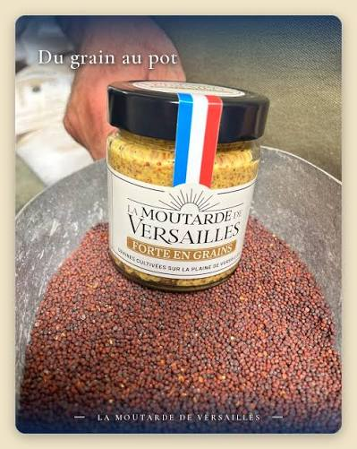
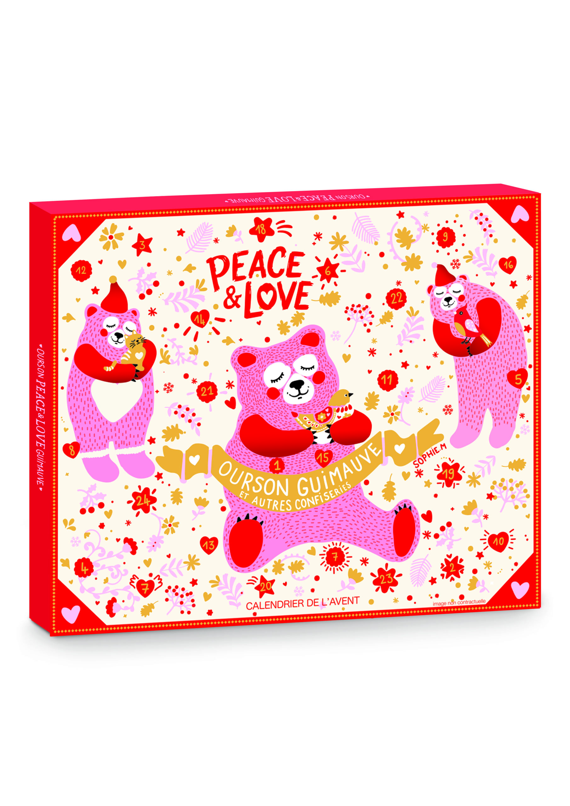
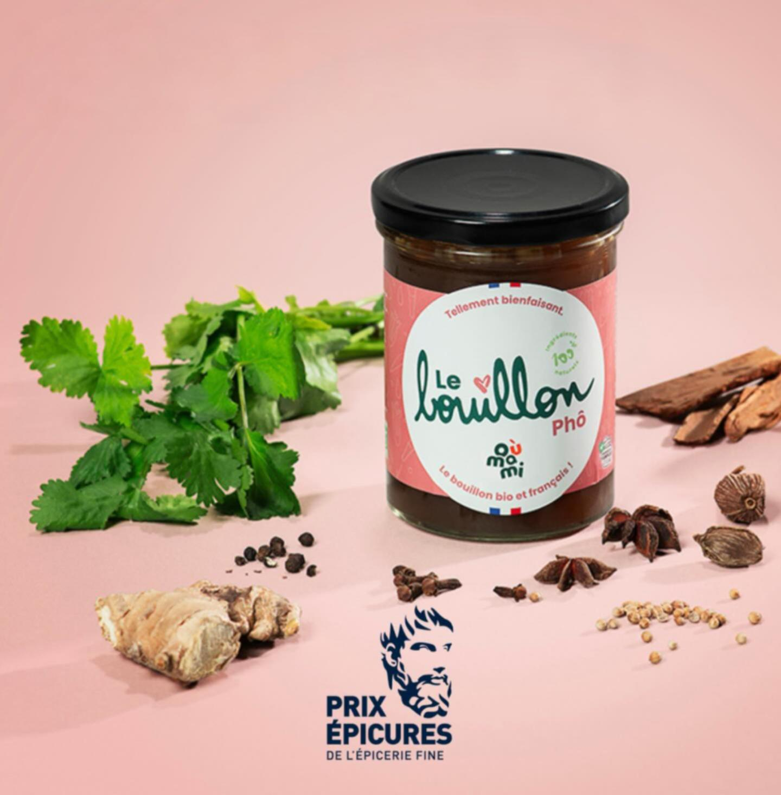
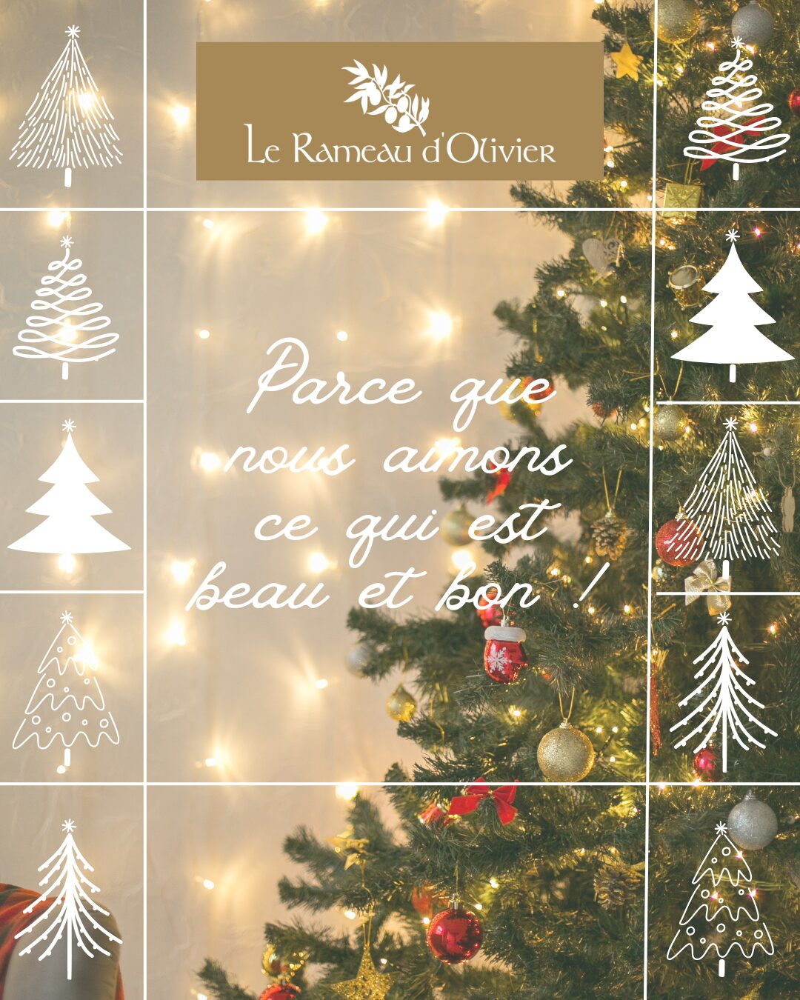

L'épicerie fine : le temple des saveurs
L’épicerie fine est un lieu où la qualité et la sélection des produits sont essentielles. Chaque référence est sélectionnée avec soin, souvent issue de circuits artisanaux ou locaux et dotée d’une histoire. On y trouve des produits uniques et originaux : huiles d’olive et vinaigres d’exception, épices du monde entier, condiments, spécialités régionales artisanales et bien entendu des thés prestigieux ou des cafés pure origine.
L’épicier est passionné et fin connaisseur, il partage ses conseils et anecdotes pour transformer chaque achat en un moment de découverte.
Avec plus de 1000 références en boutique, nous souhaitons que le Rameau d’Olivier reste un lieu où l’on prend le temps de découvrir, de goûter et d’échanger.

Nos engagements
- Vous offrir une véritable expérience sensorielle et culinaire
- Vous raconter la provenance et l’histoire de chacun de nos produits
- Vous guider dans vos achats avec plaisir
- Vous conseiller dans le choix de vos cadeaux gourmands
Nos nouveautés

Calendrier Oliviers & Co

Calendrier Le Roy René

Calendrier Terre Exotique

Moutardes de Versailles

Calendrier Sophie M

Les bouillons Oumami

Foie Gras Barthouil
Le Rameau d'Olivier… plus qu'une épicerie… c'est le cœur gourmand de notre coffee shop, une histoire de goût partagée entre amis et qui fait pétiller nos plats.
Un lieu de découverte et de plaisir pour les gourmands et les passionnés de gastronomie.
Pour le plus grand plaisir de nos hôtes, le Rameau d'Olivier nous a aidés à choisir les 1000 petites choses qui subliment un plat basique. Notre plateau d'épices et de condiments regorge de curiosités, au point d'en faire notre signature.
Le plaisir d'offrir
Vous souhaitez offrir un cadeau gourmand à ceux que vous aimez mais qui se trouvent à distance ? Nous pouvons nous charger de l’envoi pour vous au tarif Colissimo en vigueur.
Pour vos clients ou collaborateurs, nous pouvons vous proposer des sélections de cadeaux d’entreprise sur mesure.
Contactez-nous